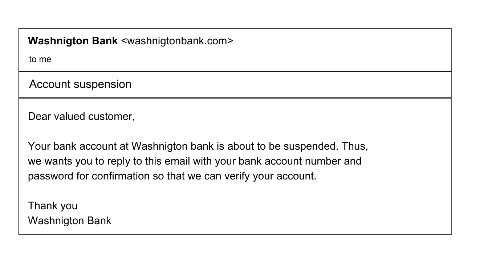

Phishing

Phishing is a social engineering attack. Social engineering attack involves manipulating a person socially to get necessary information. Example, convincing someone to reveal their sensitive credentials. In phishing, the attacker mimics being someone else, such as bank, agencies or any other institutions. For example, the attacker can create a fake bank account and send target an email stating that his/her bank account will be suspended if he doesn’t reply the email mentioning his credentials. So, the key takeaway is that phishing is an online scam where attackers try to trick us into revealing sensitive information.
Key features of phishing
- The attacker impersonates to be a legitimate person or organization.
- The main goal of attacker is to get sensitive information from the target.
- The website or email of phishing seems to be legitimate but contains malicious code, or aims to steal personal data.
Analyzing phishing attack
This is an email received from Washington bank which says that the customer account is about to be suspended and the credentials need to be replied to this email. This obviously looks suspicious but there are some important things to consider, which are the characteristics of phishing emails.
- Name: If looked at the name of the sender carefully, it misspells Washington. This is because the attacker cannot use the legitimate domain of the actual Washington bank.
- Grammatical error: The email reads ‘We wants you to reply’, which is grammatically incorrect. These mistakes are made to escape the email filter systems. Email filtering is what sends an email to spam folder.
- Fear: Any email from a legitimate organization doesn’t use fearsome language like the email above. One of the major characteristics of phishing email is the fearsome language.
- Communication: A bank would never ask for a credential over an email. Any organization would have a verified way of communicating such sensitive information.
Types of phishing
A phishing email may be targeted to many people, a specific person and via various ways. There are different types of phishing:
- Spear phishing: Spear phishing is targeted to a specific person. For example, a phishing email targeting a receptionist at a hotel convincing to give some valuable information about a person staying at that hotel.
- Whaling: Whaling is a spear phishing targeted to a high-profile individuals like CEOs and executives.
- Smishing (SMS phishing): Smishing is phishing via SMS. It involves sending malicious links or asking for sensitive information via SMS text.
- Vishing (Voice phishing): Vishing is phishing via voice calls. The attacker pretends to be a legitimate person and ask for valuable information via phone call. Example of vishing is tech support calls, where the attacker impersonates to be from a tech support and ask for credentials to fix some issues.
- Clone phishing: Like the name suggests, the attacker clones a legitimate email, but modifying it slightly. For example, the attacker can copy a legitimate email from an organization that the target had received, attach malicious links or login forms to steal information, and resend it to the target.
Protecting from phishing
- Always check the email or messages for grammatical errors or fearsome language.
- Always verify the source of emails and messages.
- Do not spill out confidential information over email or phone calls.
- Always contact with the actual organization when received any email which seems to be from that organization.
- Avoid clicking links without verification.
- Enable Multifactor Authentication to protect your account even if you submit the username and password to the attacker.
Test your phishing knowledge in phishing simulator